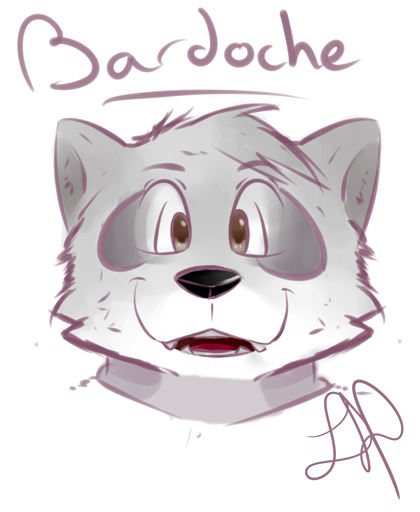
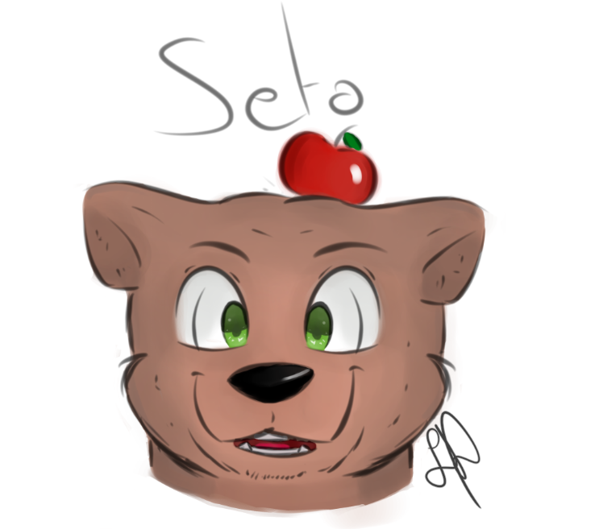
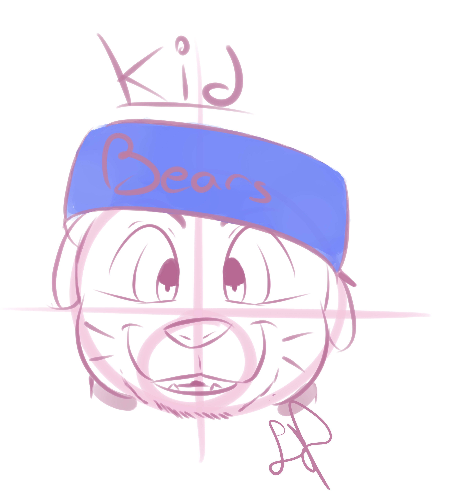
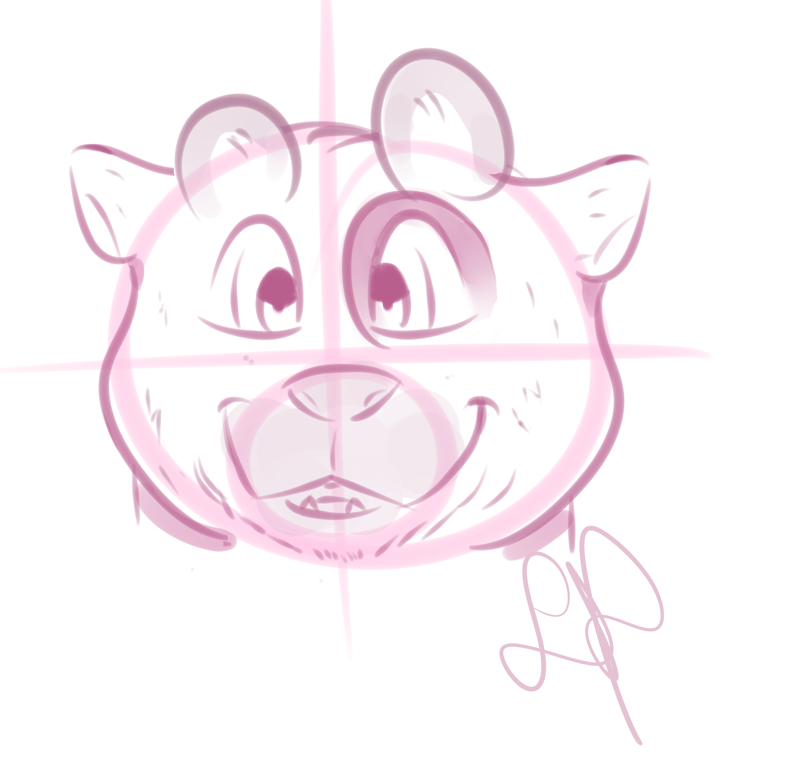

Character Design
De l'humain à L'animal
Il s'agit d'un projet dans lequel je me suis amusé à retranscrire mes différentes fréquentations dans un style cartoon. Le but était de retranscrire à travers des formes non humaines des caractéristiques qui leurs son propre afin de les reconnaitre malgrès cette transformation.




Photographie


La lumière et L'atmosphère
Ces photographies ont été réalisées pour un projet dans lequel je devais me définir à travers le questionnaire de Proust auquel je ne pouvais répondre seulement à travers ma pelicule. J'ai donc fait le choix de jouer énormément avec la lumière et de faire passer différentes atmosphères grâce à celle-ci.
Illustrations digitales
Mon travail au travers d'une Selection
Ces illustrations sont donc quelques réalisations sélectionnées parmis celles que j'ai réalisées. Elles permettent de présenter mon travail à travers un portrait crée sur Illustrator, un dessin réalisé en dehors de ma licence ou encore à travers des logos simples.